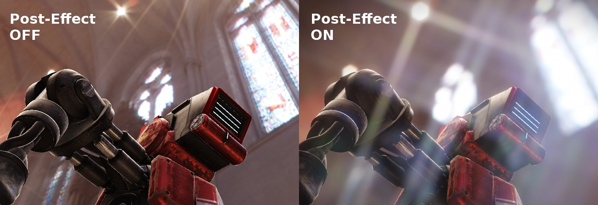
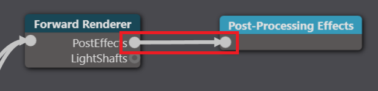
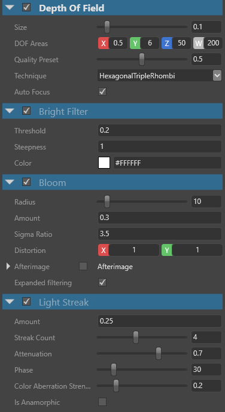

Post effects
Post effects are usually applied after your game has completed the rendering of a frame, but before the UI is drawn. You can use post effects to tune or embellish an image — for example, by producing a more natural, realistic look, or creating stylized cinematic effects.

Post effects are usually applied to an image. This means they have no connection with vertices or meshes. They only work with the color values of each pixel (and sometimes their depth).
Typically, you set up a post effect by specifying:
- input buffers (eg color, depth)
- one or several output buffers
- parameters to customize the behavior of the post effect during its rendering pass
Stride provides several predefined post effects. You can also extend the system to create your own color transform effects.
Note
Depth-aware post effects ̶ ie depth of field, ambient occlusion, and local reflections ̶ nullify MSAA (multisample anti-aliasing).
Add or edit a post effect
You add and edit post effects in the graphics compositor.
In the Asset View (in the bottom pane by default), double-click the Graphics Compositor asset.

The graphics compositor editor opens.

Select the Post-processing effects node.
Tip
If there's no post-process effects node, right-click and select Create > post-processing effects to create one. On the new forward renderer node, on the PostEffects slot, click and drag a link to the post-processing effects node. 
In the Property Grid (on the right by default), enable the post effects you want to use and configure their properties.

For details about each post effect and its properties, see the pages below.
In this section
- Anti-aliasing
- Fog
- Outline
- Ambient occlusion
- Bloom
- Bright filter
- Color transforms
- Depth of field
- Lens flare
- Light streaks
- Local reflections